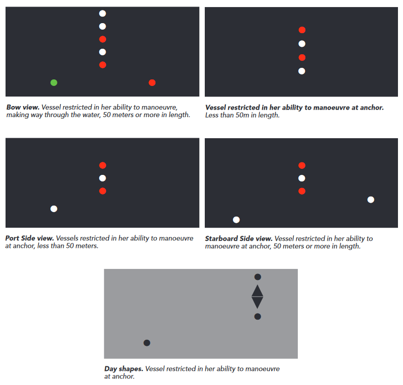
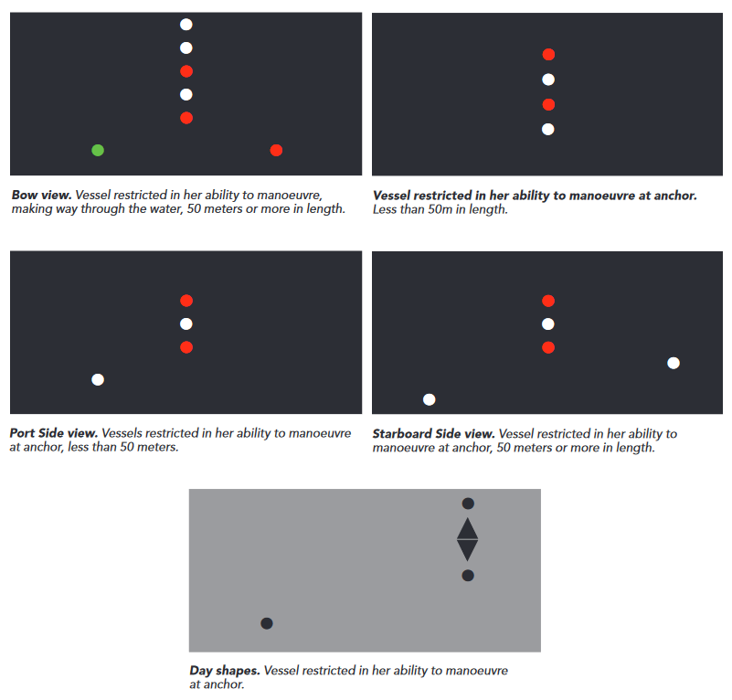

Navigation Safety
Collision Regulations (with Canadian Modifications)
Forenotes
Resources: the collision regulations are pretty easy to look up examples of. It is important to note that most examples of the collision regulations will be referring to their international version, and therefore it is important to know whether local modifications (ie. canadian modifications) exist. I have multiple books about the collision regulations in my library. I have most widely used and cited Cockroft's 'Collision Avoidance Rules', but have also found Dokmar's 'Colregs Guide' and MTB's 'Seamans's Guide to the Rules of the Road' to be helpful to me, despite none of these publications including the canadian modifications. Other helpful study aids have been phone apps for display of lights and demonstrations of sound signals (I prefer the ones made by madeof.blue for android phones) and captaindamley also has a great colregs elearning module with notes. There are great videos on youtube for people who learn the best by watching videos. Canadian mariners will find value in specifically looking for examples of the COLREGS applied to the great lakes, which will usually include much of the canadian modifications.
Considerations: the language used within the colregs is extremely technical and the wording of rules should be carefully noted, particularily the differences between words like 'shall' 'may' and 'must'. 'Shall' will always mean that an action must be taken, wheras 'may' indicates that it is compulsory. Vessel size is also very particular and there is a crucial difference between 'greater than __/less than __' and 'of __ or more/ of __ or less'. An example of this would be a vessel less than 20 meters, which references a vessel from 0 m-to 19.9999 meters- any value that is under 20 meters; as opposed to 20 meters or less, which would include vessels 0 meters - 20 meters. It seems quite straightforward, but it is extremely important to have a solid understanding of the wording used in the regulations because it is crucial in interpretation of the rules.
Part A- General
(1) Application:
- These Rules shall apply to all vessels upon the high seas and in all waters connected therewith navigable by seagoing vessels.
- Nothing in these Rules shall interfere with the operation of special rules made by an appropriate authority for roadsteads, harbours, rivers, lakes or inland waterways connected with the high seas and navigable by sea-going vessels if such special rules conform as closely as possible to these Rules.
- Nothing in these Rules shall interfere with the operation of any special rules made by the government of any state with respect to additional station or signal lights, shapes or whistle signals for ships of war and vessels proceeding under convoy, or with respect to additional station or signal lights or shapes for fishing vessels engaged in fishing as a fleet. These additional station or signal lights, shapes or whistle signals shall, so far as possible, be such that they cannot be mistaken for any light, shape or signal authorized elsewhere under these Rules.
- Traffic separation schemes may be adopted by the Organization for the purpose of these Rules.
- Where the Government concerned determines that a vessel of special construction or purpose cannot comply fully with the provisions of any of these Rules with respect to the number, position, range or arc of visibility of lights or shapes, as well as to the disposition and characteristics of sound-signalling appliances, the vessel shall comply with such other provisions in regard to the number, position, range or arc of visibility of lights or shapes, as well as to the disposition and characteristics of sound-signalling appliances as the Government determines to be the closest possible compliance with these Rules in respect of that vessel. Canadian modifcations exist as follows...
- Any determination referred to in paragraph (e) in respect of a Canadian vessel or Canadian pleasure craft shall be made by the Minister.
- Each determination referred to in paragraph (e) shall be evaluated to ensure that there will be no reduction in safety taking into account such factors as the following:
i. in the case of lights,
A) any impairment of the visibility or distinctive character of the lights,
B) glare or back-scatter in the navigation or working areas,
C) vulnerability of the lights to damage, or
D) difficult or dangerous access to the lights for maintenance purposes, and
ii. in the case of sound-signalling appliances,
A) any impairment of audibility or other characteristics of the sound-signalling appliances,
B) excessive sound pressure levels at listening posts or in navigation or working areas,
C) vulnerability of the sound-signalling appliances to damage, or
D) difficult or dangerous access to the sound-signalling appliances for maintenance purposes.
(2) Responsibility: rule 2 of the collision regulations is extremely important and at very least the intent of the rules shall be memorized by all mariners. It is as follows...
- "Nothing in these rules shall exonerate any vessel, or the owner, master or crew therof, from the consequeneces of any neglect to comply with these rules or the neglect of any precaution which may be required by the ordinary practice of seamen, or by the special circumstances of the case."
- "In construing and complying with these rules due regard shall be had to all dangers of navigation and collision and to any special circumstances, including the limitations of the vessels involved, which may make a departure from the rules necessary to avoid immediate danger."
(3) General Definitions:
- For the purpose of these Rules, except where the context otherwise requires:
- The word “vessel” includes every description of water craft, including non-displacement craft, WIG craft and seaplanes, used or capable of being used as a means of transportation on water.
- The term power-driven vessel means any vessel propelled by machinery.
- The term sailing vessel means any vessel under sail provided that propelling machinery, if fitted, is not being used.
- The term vessel engaged in fishing means any vessel fishing with nets, lines, trawls or other fishing apparatus which restrict manoeuvrability, but does not include a vessel fishing with trolling lines or other fishing apparatus which do not restrict manoeuvrability.
- The word “seaplane” includes any aircraft designed to manoeuvre on the water.
- The term vessel not under command means a vessel which through some exceptional circumstance is unable to manoeuvre as required by these Rules and is therefore unable to keep out of the way of another vessel.
- The term vessel restricted in her ability to manoeuvre means a vessel which from the nature of her work is restricted in her ability to manoeuvre as required by these Rules and is therefore unable to keep out of the way of another vessel.
The term “vessels restricted in their ability to manoeuvre” shall include but not be limited to:
i. a vessel engaged in laying, servicing or picking up a navigation mark, submarine cable or pipeline,
ii. a vessel engaged in dredging, surveying or underwater operations,
iii. a vessel engaged in replenishment or transferring persons, provisions or cargo while underway,
iv. a vessel engaged in the launching or recovery of aircraft,
v. a vessel engaged in mineclearance operations,
vi. a vessel engaged in a towing operation such as severely restricts the towing vessel and her tow in their ability to deviate from their course. - The term vessel constrained by her draught means a power-driven vessel that, because of the vessel’s draught in relation to the available depth and width of navigable water, is severely restricted in the vessel’s ability to deviate from the course the vessel is following.
- The word underway means that a vessel is not at anchor, or made fast to the shore, or aground.
- The words length and breadth of a vessel mean her length overall and greatest breadth.
- Vessels shall be deemed to be in sight of one another only when one can be observed visually from the other.
- The term restricted visibility means any condition in which visibility is restricted by fog, mist, falling snow, heavy rainstorms, sandstorms or any other similar causes.
- The term Wing-in-Ground (WIG) craft means a multimodal craft which, in its main operational mode, flies in close proximity to the surface by utilizing surface-effect action. canadian modifications exist as follows...
- For the purposes of these Rules, the definition of the word “vessel” in paragraph (a) does not apply.
Part B- Steering and Sailing Rules
Section I - Conduct of Vessels in Any Condition of Visibility
(4) Application: another application rule. This rule defines that all content follows applies in all conditions of visibility (including restricted visibility). In essence, this means that rules 1-10 apply all the time irregardless of visibility (which is relevant later on)
(5) Lookout:
Also of note is that this definition tends to come up frequently during the general seamanship oral examinations. Lookout is an extremely important rule as many times in the past poor lookout and watchkeeping have lead to collisions and have thus set a precedent in the court of law. As the navigator and as the OOW it is important to keep a lookout to the best of your ability even solely to cover your own hide in the event that any collision does occur and the finger is pointed your way (it is very easy to nail OOW on poor lookout in the courts). Even at anchor it is necesary to keep a lookout in the bridge so as to make a full appraisal of the situation; there are many reasons for this, but what stands out to me is that the person in the bridge acting as lookout may want to stand by in the event that the anchor drags (which therefore would classify the vessel as 'underway' and require additional rules which apply to vessels underway). Cockroft's 'collision avoidance rules' has a really great chapter about duties of the lookout, and so does Dokmar's 'colregs guide'.
- "Every vessel shall at all times maintain a proper lookout via sight and hearing, as well as all other available means appropriate to the prevailing circumstances and condition, so as to make a full appraisal of the situation and of risk of collision."
Also of note is that this definition tends to come up frequently during the general seamanship oral examinations. Lookout is an extremely important rule as many times in the past poor lookout and watchkeeping have lead to collisions and have thus set a precedent in the court of law. As the navigator and as the OOW it is important to keep a lookout to the best of your ability even solely to cover your own hide in the event that any collision does occur and the finger is pointed your way (it is very easy to nail OOW on poor lookout in the courts). Even at anchor it is necesary to keep a lookout in the bridge so as to make a full appraisal of the situation; there are many reasons for this, but what stands out to me is that the person in the bridge acting as lookout may want to stand by in the event that the anchor drags (which therefore would classify the vessel as 'underway' and require additional rules which apply to vessels underway). Cockroft's 'collision avoidance rules' has a really great chapter about duties of the lookout, and so does Dokmar's 'colregs guide'.
(6) Safe Speed:
- Every vessel shall at all times proceed at a safe speed so that she can take proper and effective
action to avoid collision and be stopped within a distance appropriate to the prevailing
circumstances and conditions. In determining a safe speed the following factors shall be among those taken into account...
- All vessels:
- the state of visibility, (clear or restricted)
- the traffic density including concentrations of fishing vessels or any other vessels,
- the maneoeuverability of the vessel with special refrence to stopping distance and turning ability in the prevailing conditions,
- at night the presence of background light such as from shore lights or from back scatter of her own lights,
- the state of the wind, sea, and current, and the proximity of navigational hazards,
- the draught in relation to the available depth of water,
- Additionally, in vessels with operational radar
- the characteristics, efficiency and limitations of the radar equipment,
- any constraints imposed by the radar range scale in use,
- the effect on radar detection of the sea state, weather and other sources of interference,
- the possibilty that small vessels, ice and other floating objects may not be detected by radar at an adequate range
- the number, location and movement of vessels detected by radar,
- the more exact assessment of the visibility what may be possible when radar is used to determine the range of vessels or other objects in the vicinity.
(7) Risk of Collision:
- Every vessel shall use all available means appropriate to the prevailing circumstances and conditions to determine if risk of collision exists. If there is any doubt such risk shall be deemed to exist.
- Proper use shall be made of radar equipment if fitted and operational, including long-range scanning to obtain early warning of risk of collision and radar plotting or equivalent systematic observation of detected objects.
- Assumptions shall not be made on the basis of scanty information, especially scanty radar information.
- In determining if risk of collision exists, the following consideratios shall be among those taken into account...
i. such risk shall be deemed to exist if the compass bearing of an approaching vessel does not appreciably change,
ii. such risk may sometimes exist even when an appreciable bearing change is evident, particularly when approaching a very large vessel or a tow or when approaching a vessel at close range
(8) Action to Avoid Collision:
- Any action to avoid collision shall be taken in accordance with the rules of this part, and shall, if the circumstances of the case admit, be positive, made in ample time and with due regard to the observance of good seamanship.
- Any alteraton of course and/or speed to avoid collision shall, if the circumstances of the case admit, be large enough to be readily apparent to another vessel observing visually or by radar; a succession of small alterations of course and/or speed should be avoided.
- If there is sufficient sea room, alteration of course alone may be the most effective action to avoid a close-quarters situation provided that it is made in good time, is substantial and does not result in another close-quarters situation.
- Action taken to avoid collision with another vessel shall be as such to result in passing at a safe distance. The effectiveness of the action shall be carefully checked until the other vessel is finally past and clear.
- If necessary to avoid collision ot allow more time to asses the situation, a vessel shall slacken her speed or take all way off by stopping or reversing her means of propulsion.
- i. A vessel which, by any of these rules, is required not to impede the passage or safe passage of anohter vessel shall, when required by the circumstances of the case, take early action to allow sufficient searoom for the safe passage of the other vessel.
ii. A vessel required not to impede the passage or the safe passage of another vessel is not relieved of this latter obligation if approaching the other vessel so as to involve risk of collision and shall, when taking action, have full regard to the action which may be required by the rules of this part
iii. A vessel the passage of which is not to be impeded remains fully obliged to comply with the rules of this Part when the two vessels are approaching one another so as to involve risk of collision.
(9) Narrow Channels:
- a vessel proceeding along the course of a narrow channel or fairway shall keep as near to the outer limit of the channel or fairway which lies on her starboard side as is safe and practicable,
- a vessel of less than 20 metres in length or a sailing vessel shall not impede the passage of a vessel which can safely navigate only within a narrow channel or fairway,
- a vessel engaged in fishing shall not impede the passage of any other vessel navigating within a narrow channel or fairway
- a vessel shall not cross a narrow channel or fairway if such crossing impedes the passage of a vessel which can safely navigate only within such channel or fairway. The latter vessel may use the sound signal prescribed in Rule 34(d) if in doubt as to the intention of the crossing vessel,
- i. in a narrow channel or fairway when overtaking can take place only if the vessel to be overtaken has to take action to permit safe passing, the vessel intending to overtake shall indicate her intention by sounding the appropriate signal prescribed in Rule 34(c)(i). The vessel to be overtaken shall, if in agreement, sound the appropriate signal prescribed in Rule 34(c)(ii) and take steps to permit safe passing. If in doubt she may sound the signals prescribed in Rule 34(d),
ii. this Rule does not relieve the overtaking vessel of her obligation under Rule 13, - a vessel nearing a bend or an area of a narrow channel or fairway where other vessels may be obscured by an intervening obstruction shall navigate with particular alertness and caution and shall sound the appropriate signal prescribed in Rule 34(e),
- any vessel shall, if the circumstances of the case admit, avoid anchoring in a narrow channel. Canadian modifications exist for this rule as follows...
- notwithstanding paragraph (d), in the waters of the Great Lakes Basin, a vessel that can safely navigate only within a narrow channel or fairway shall, if a crossing vessel impedes her passage, use the sound signal prescribed in Rule 34(d) if in doubt as to the intention of the crossing vessel.
- notwithstanding paragraph (e), in a narrow channel or fairway in the waters of the Great Lakes Basin, a vessel shall indicate its intention to overtake, or its agreement to being overtaken, as the case may be, by sounding the whistle signals prescribed in Rule 34(j).
- in the Canadian waters of a narrow channel or fairway a barge or an inconspicuous, partly submerged vessel or object shall not be navigated, moored or anchored so as to impede the safe passage of any other vessel or object using those waters.
- notwithstanding paragraph (a) and Rule 14(a), in the Canadian waters of a narrow channel or fairway where there is a current or tidal stream and two power-driven vessels are meeting each other from opposite directions so as to involve risk of collision,
i. the vessel proceeding with the current or tidal stream shall be the stand-on vessel and shall propose the place of passage and shall indicate the side on which she intends to pass by sounding the appropriate signal prescribed in Rule 34(a) or (g),
ii. the vessel proceeding against the current or tidal stream shall keep out of the way of the vessel proceeding with the current or tidal stream and shall hold as necessary to permit safe passing,
iii. the vessel proceeding against the current or tidal stream shall promptly reply to the signal referred to in subparagraph (i) with the same signal, if she is in agreement, and with the sound signal prescribed in Rule 34(d), if she is in doubt.
(10) Traffic Seperation Schemes:
Canadian modifications also exist for this rule, giving more allowance to fishing vessels and forcing larger ships to use the traffic lanes and appropriate routing for their cargo type unless there are 'compelling reasons' to not do as such (and such reasons must be recorded in the logbook). The last part of the rule is noteworthy to certain vessels as it is very specific.
- this rule applies to traffic separation schemes adopted by the Organization and does not relieve any vessel of her obligation under any other rule.
- A vessel using a traffic separation scheme shall:
i. proceed in the appropriate traffic lane in the general direction of traffic flow for that lane,
ii. so far as practicable keep clear of a traffic separation line or separation zone,
iii. normally join or leave a traffic lane at the termination of the lane, but when joining or leaving from either side shall do so at as small an angle to the general direction of traffic flow as practicable. - A vessel shall, so far as practicable, avoid crossing traffic lanes but, if obliged to do so, shall cross on a heading as nearly as practicable at right angles to the general direction of traffic flow.
- i. A vessel shall not use an inshore traffic zone when it can safely use the appropriate traffic lane within the adjacent traffic separation scheme. However, vessels of less than 20 metres in length, sailing vessels and vessels engaged in fishing may use the inshore traffic zone.
ii. Notwithstanding subparagraph (i), a vessel may use an inshore traffic zone when en route to or from a port, an offshore installation or structure, a pilot station or any other place situated within the inshore traffic zone or to avoid immediate danger. - A vessel other than a crossing vessel or a vessel joining or leaving a lane shall not normally enter a separation zone or cross a separation line except
i. in cases of emergency to avoid immediate danger, or
ii. to engage in fishing within a separation zone. - a vessel navigating in areas near the terminations of traffic separation schemes shall do so with particular caution.
- a vessel shall so far as practicable avoid anchoring in a traffic separation scheme or in areas near its terminations
- a vessel not using a traffic separation scheme shall avoid it by as wide a margin as is practicable.
- a vessel engaged in fishing shall not impede the passage of any vessel following a traffic lane.
- a vessel of less than 20 metres in length or a sailing vessel shall not impede the safe passage of a power-driven vessel following a traffic lane.
- a vessel restricted in her ability to manoeuvre when engaged in an operation for the maintenance of safety of navigation in a traffic separation scheme is exempted from complying with this Rule to the extent necessary to carry out the operation.
- a vessel restricted in her ability to manoeuvre when engaged in an operation for the laying, servicing or picking up of a submarine cable, within a traffic separation scheme, is exempted from complying with this Rule to the extent necessary to carry out the operation. canadian modifications for this rule exist as follows...
- subject to paragraphs (q) and (r), paragraphs (b) to (l) apply to traffic separation schemes described in any current Notice to Mariners or Navigational Warning
- a vessel shall use the mandatory routing system, if any, required for its category or the cargo carried that is adopted by the Organization and is described in the publication entitled Ships’ Routeing, as amended from time to time, and shall conform to the relevant provisions in force.
- a power-driven vessel of more than 20 metres in length shall use a traffic separation scheme and the associated routing system, if any, by which it can safely proceed to its destination, that are adopted by the Organization as recommendations and that are in force and described in the publication Ships’ Routeing, as amended from time to time.
- the requirements set out in paragraph (n) or (o) do not apply if there are compelling reasons not to use a particular traffic separation scheme or routing system, and the reasons shall be recorded in the vessel’s logbook.
- paragraphs (b), (c) and (h) do not apply to a vessel engaged in fishing with nets, lines, trawls, trolling lines or other fishing apparatus in or near a routing system located in Canadian waters or fishing zones.
- paragraphs (b), (c), (e) and (h) do not apply to a vessel engaged in laying, servicing or picking up a navigation mark, submarine cable or pipeline, dredging, surveying, underwater operations or launching or recovering aircraft in or near a routing system located in Canadian waters or fishing zones, where that vessel
i. does not prevent other vessels that use the route from navigating safely,
ii. identifies itself to approaching vessels and informs them of the location and nature of its operation and of its intentions, and
iii. informs the Department of Fisheries and Oceans, as soon as possible before the commencement of the operation, of
A) the nature, location and duration of the operation, and
B) any necessary cautionary advice concerning the operation. - a vessel making a transatlantic voyage shall, as far as practicable, avoid crossing the Grand Banks of Newfoundland and Labrador north of 43° north latitude.
Canadian modifications also exist for this rule, giving more allowance to fishing vessels and forcing larger ships to use the traffic lanes and appropriate routing for their cargo type unless there are 'compelling reasons' to not do as such (and such reasons must be recorded in the logbook). The last part of the rule is noteworthy to certain vessels as it is very specific.
Section II - Conduct of Vessels in Sight of One Another
(11) Application:
- rules in this section apply to vessels in sight of one another.


diagrams of various sailing vessel situations
- when two sailing vessels are approaching one another, so as to involve risk of collision, one of them shall keep out of the way of the other as follows:
i. when each has the wind on a different side, the vessel which has the wind on the port side shall keep out of the way of the other;
ii. when both have the wind on the same side, the vessel which is to windward shall keep out of the way of the vessel which is to leeward;
iii. if a vessel with the wind on the port side sees a vessel to windward and cannot determine with certainty whether the other vessel has the wind on the port or the starboard side, she shall keep out of the way of the other.
- for the purpose of this rule the windward side shall be deemed to be the side opposite to that on which the mainsail is carried or, in the case of a square rigged vessel, the side opposite to that on which the largest fore-and-aft sail is carried.

the arc of visibility relevant to overtaking
- notwithstanding anything contained in the rules of part B, sections I and II, any vessel overtaking any other shall keep out of the way of the vessel being overtaken,
- a vessel shall be deemed to be overtaking when coming up with another vessel from a direction more than 22.5 degrees abaft her beam, that is, in such a position with reference to the vessel she is overtaking, that at night she would be able to see only the sternlight of that vessel but neither of her sidelights,
- when a vessel is in any doubt as to whether she is overtaking another, she shall assume that this is the case and act accordingly,
- any subsequent alteration of the bearing between the two vessels shall not make the overtaking vessel a crossing vessel within the meaning of these rules or relieve her the duty of keeping clear of the overtaken vessel until she is finally past and clear,
(14) Head on Situation:
- when two power-driven vessels are meeting on reciprocal or nearly reciprocal courses so as to involve risk of collision each shall alter her course to starboard so that each shall pass on the port side of the other,
- such a situation shall be deemed to exist when a vessel sees the other ahead or nearly ahead and by night she could see the masthead lighs of the other in a line or nearly in a line and/or both sidelights and by day she observes the corresponding aspect of the other vessel,
- when a vessel is in any doubt as to whetehr such a situation exists she shall assume that id does exist and act accordingly
(15) Crossing Situation:
- when two power-driven vesels are crossing so as to involve risk of collision, the vesesl which has the other on her own starboard side shall keep out of the way and shall, if the circumstances of the case admit, avoid crossing ahead of the other vessel.
(16) Action by Give-way Vessel:
- every vessel which is directed to keep out of the way of another vessel shall, so far as possible, take early and substantial action to keep well clear
(17) Action by Stand-on Vessel:
- i. where one of two vessels is to keep out of the way, the other shall keep her course and speed,
ii. the latter vessel may however take action to avoid collision by her manoeuvre alone, as soon as it becomes apparent to her tha the vessel required to keep out of the way is not taking appropriate action in compliance with these rules,
- when, from any cause, the vessel required to keep her course and speed finds herself so close that collision cannot be avoided by the action of the give-way vessel alone, she shall take such action as will best aid to avoid collision,
- a power-driven vessel which takes action in a crossing situation in accordance with subparagraph a(ii) of this rule to avoid collision with another power-driven vessel shall, if the circumstances of the case admit, not alter course to port for a vessel on her own port side,
- this rule does not relieve the give-way vessel of her obligation to keep out of the way
- 1. at long range before risk of collision exists, both vessels are free to act
2. when risk of collision first begins to apply, the give-way vessel is required to take 'early and substantial action' and the stand on vessel must keep her course and speed.
3. when it becomes apparent that the give0way vessel is not taking action as required, the stand on vessel is then permitted to take avoiding action (after sounding their whistle to express confusion about intent)- but very importantly must not make any alterations to port in the case that there is traffic to the port side.
4. when collision cannot be avoided by the give-way vessel alone, the stand on vessel shall (must) take any action necessary to avoid a collision

diagram of vessel 'heirarchy' in rule 18 (right click and open to view)
- except where rules 9 (narrow channels), 10 (traffic seperation schemes) and 13 (overtaking) otherwise require:
- a power driven vessel underway shall keep out of the way of;
i. a vessel not under command,
ii. a vessel restricted in her ability to manoeuvre,
iii. a vessel engaged in fishing,
iv. a sailing vessel - a sailing vessel underway shall keep out of the way of;
i. a vessel not under command,
ii. a vessel restricted in her ability to manoeuvre,
iii. a vessel engaged in fishing, - a vessel engaged in fishing when underway shall, so far as possible, keep out of the way of;
i. a vessel not under command,
ii. a vessel restricted in her ability to manoeuvre, - i. any vessel other than a vessel not under command or a vessel restricte din her ability to manoeuvre shall, if the circumstances of the case admit, avoid impeding the safe passage of a vessel constrained by her draught, exhibiting the signals in Rule 28,
ii. a vessel constrained by her draught shall navigate with particular caustion having full regard to her special condition, - a seaplane on the water shall, in general, keep well clear of all vessels and avoid impeding their navigation. In circumstances, however, where risk of collision exists, she shall complay with the rules of this part.
- i. a WIG craft shall, when taking off, landing and in flight near the surface, keep welll clear of all other vessels and avoid impeding their navigation,
ii. a WIG craft operating on the water surface shall comply with the rules of this part as a power driven vessel.
Section III - Conduct of Vessels in Restricted Visibility
(19) Conduct of Vessels in Restricted Visibility:
- this rule applies to vessels not in sight of one another when navigating in or near an area of restricted visibility,
- every vessel shall proceeed at a safe speed adapted to the prevailing circumstances and conditions of restricted visibility. A power-driven vessel shall have her engines available for immediate maneouvre,
- every vessel shall have due regard to the prevailing circumstances and conditions of restricted visibility when complying with the rules of section I of this part,
- a vessel which detects by radar alone the presence of another vessel shall determine if a close-quarters situation is developing and/or risk of collision exists. If so, she shall take avoiding action in ample time, provided that when such action consists of an alteration of course, so far as possible the following shall be avoided:
i. an alteration of course to port for a vessel forward of the beam, other than for a vessel being overtaken,
ii. an alteration of course towards a vessel abeam or abaft the beam, - except where it has been determined that a risk of collision does not exist, every vessel which hears apparently forward of her beam the fog signal of another vessel, or which cannot avoid a close-quarters situation with another vessel forward of her beam, shall reduce her speed to the minimum at which she can be kept on her course. She shall if necessary take all her way off and in any event navigate with extreme caution until danger of collision is over,
Part C - Lights and Shapes
(20) Application:
- rules of this part shall be complied with in all weathers,
- the rules concerning lights shall be complied with from sunset to sunrise and during such times no other lights shall be exhibited, except such lights as cannot be mistaken for the lights specified in these rules or do not impair their visibility or distinctive character, or interfere with the keeping of a proper look-out,
- the lights prescribed by these rules shall, if carried, also be exhibited from sunrise to sunset in restricted visibility and may be exhibited in all other circumstances when it is deemed necessary,
- the rules concerning shapes shall be complied with by day
- the lights and shapes specified in these rules shall comply with the provisions of annex I to these regulations

diagram of light visibility
- 'masthead light' means a white light placed over the fore and aft centerline of the vessel showing an unbroken light over an arc of the horizon of 225 degrees and so fixed as to show the light from right ahead to 22.5 degrees abaft the beam on either side of the vessel,
- 'sidelights' means a green light on the starboard side and a red light on the port side each showing an unbroken light over an arc of the horizon of 112.5 degrees and so fixed as to show the light from right ahead to 22.5 degrees abaft the beam on its respective side. In a vessel of less than 20 meters in length the sidelights may be combined in one lantern carried on the fore and aft centerline of the vessel,
- 'sternlight' means a white light placed as nearly as practicable at the sterm showing an unbroken light over an arc of the horizon of 135 degrees and so fixed as to show the light 67.5 degrees from right aft on each side of the vessel,
- 'towing light' means a yellow light having the same characteristic as the 'sternlight' defined in paragraph (c) of this rule,
- 'all-around light' means a light showing an unbroken light over an arc of the horizon of 360 degrees,
- 'flashing light' means a light flashing at regular intervals at a frequency of 120 flashes or more per minute, Additional Canadian Modifications for this rule exist as follows;
- 'special flashing light' means a yellow light flashing at regular intervals at a frequency of 50 to 70 flashes per minute, placed as far forward and as nearly as practicable on the fore and aft centerline of a vessel and showing an unbroken light over an arc of the horizon of not less than 180 degrees nor more than 225 degrees and so fixed as to show the light from right ahead to abeam and not more than 22.5 degrees abaft the mean on either side of the vessel,
- 'blue flashing light' means a blue all-around light flashing at regular intervals at a frequency of 50-70 flashes per minute,
table of light visibility
- the lights prescribed in these rules shall have an intensity as specified in section 8 of annex I to these regulations so as to be visible at the following minimum ranges:
- in vessels of 50 meters or more in length;
- a masthead light, 6 miles
- sidelights, 3 miles
- a sternlight, 3 miles
- a towing light, 3 miles
- a white, red, green or yellow all-around light, 3 miles - in vessels of 12 meters or more in length but less than 50 meters in length;
- a masthead light, 3 miles
- sidelights, 2 miles
- a sternlight, 2 miles
- a towing light, 2 miles
- a white, red, green or yellow all-around light, 2 miles - in vessels of less than 12 meters in length;
- a masthead light, 2 miles
- sidelights, 1 mile
- a sternlight, 2 miles
- a towing light, 2 miles
- a white, red, green or yellow all-around light, 2 miles - in inconspicuous, partly submerged vessels or objects being towed;
- a white all-around light, 3 miles,
Canadian modifications exist as follows...
- in vessels exhibiting;
- a special flashing light, 2 miles
- a blue flashing light, 2 miles
light configuration for rule 23
- a power-driven vessel underway shall exhibit:
i. a masthead light forward,
ii. a second masthead light abaft of and higher than the forward one; except that a vessel of less than 50 meters in length shall not be obliged to exhibit such light but may do so,
iii. sidelights,
iv. a sternlight - an air cushion vessel when operating in the non-displacement mode shall, in addition to the lights prescribed in paragraph (a) of this rule, exhibit an all-around flashing yellow light,
- a WIG craft only when taking off, landing and in flight near the surface shall, in addition to the lights prescribed in paragraph (a) of this rule, exhibit a high intensity all-around flashing red light,
- i. a power driven vessel of less than 12 meters in length may in lieu of the lights prescribed in paragraph (a) of this rule exhibit an all-around white light and sidelights,
ii. a power driven vessel of less than 7 meters in length whose maximum speed does not exceed 7 knots may in lieu of the lights prescribed in paragraph (a) of this rule exhibit an all-around white light and shall, if practicable, also exhibit sidelights,
iii. the masthead light of all-around white light on a power driven vessel of less than 12 meters in length may be displaced from the fore aand aft centreline of the vessel if fitting is not practicable, provided that the sidelights are conbined in one lantern which shall be carried on the fore and aft centreline of the vessel or located as nearly as practicable in the same for and aft line as the masthead light or the all-around white light,
The following are Canadian modifications to the rules....
- Rule 23d(ii) does not apply to a canadian power driven vessel in any waters or to a non-caadian power driven vessel in the canadian waters of a roadstead, harbour, lake or inland waterway,
- in the waters of the Great Lakes Basin, a power driven vessel when underway may, instead of the second masthead light and sternlight prescribed in paragraph (a), carry, in the position of the second masthead light, a single all-around white light or two such lights placed not over 800 milimeters apart horizontally, one on either side of the keel and so arranged that one or the other or both shall be visible from any angle of approach and for the same minimum range as the masthead lights.
light configuration for rule 24
- a power driven vessel when towing shall exhibit;
i. instead of the light prescribed in rule 23a(i) or (ii), two masthead lights in a vertical line. When the length of the tow, measuring from the stern of the towing vessel to the after end of the tow exceeds 200 meters, three such lights in a vertical line.
ii. sidelights
iii. a sternlight
iv. a towing light in a vertical line above the sternlight
v. when the length of the tow exceeds 200 meters, a diamond shape where it can best be seen - when a pushing vessel and a vessel being pushed ahead are rigidly connected in a composite unit they shall be regarded as a power-driven vessel and exhibit the lights prescribed in rule 23,
- a power driven vessel when pushing ahead or towing alongside, except in the case of a composite unit, shall exhibit;
i. instead of the light prescribed in rule 23a(i) or (ii), two masthead lights in a vertical line,
ii. sidelights,
iii. a sternlight, - a power driven vessel to which paragraph a or c of this rule applies shall also comply with rule 23a(ii).
- a vessel or object being towed, other than those mentioned in paragraph (g) of this rule, shall exhibit;
i. sidelights,
ii. a sternlight,
iii. when the length of the tow exceeds 200 meters, a diamond shape where it can best be seen, - provided that any number of vessels being towed alongside or pushed in a group shall be lighted as one vessel,
i. a vessel being pushed ahead, not being part of a composite unit, shall exhibit at the forward end, sidelights,
ii. a vessel being towed alongside shall exhibit a sternlight and at the forward end, sidelights, - an inconspicuous, partly submerged vessel or object, or comination of such vessels or objects being towed, shall exhibit;
i. if it is less than 25 meters in breadth, one all-around white light at or near the forward end and one at or near the after end except that dracones need not exhibit a light at or near the forward end,
ii. if it is 25 meters or more in breadth, two additional all-around white lights at or near the extremities of its breadth,
iii. if it exceeds 100 meters in length, additional all-around white lights between the lights prescribed in subparagraphs (i) and (ii) so that the distance between the lights shall not exceeed 100 meters,
iv. a diamond shape at or near the aftermost extremity of the last vessel or object being towed and if the length of the tow exceeds 200 meters an additional diamond shape where it can best be seen and located as far forward as is practicable - where from any sufficient cause it is impracticable for a vessel or object being towed to exhibit the lights or shapes prescribed in paragraph (e) or (g) of this rule, all possible measures shall be taken to light the vessel or object towed, or at last to indicate the presence of such vessel or object,
- where from any sufficient cause it is impracticable for a vessel not normally engaged in towing operations to display the lights prescribed in paragraph (a) or (c) of this rule, such vessel shall not be required to exhibit those lights when engaged in towing another vessel in distress or otherwise in need of assistance. All possible measures shall be taken to indicate the nature of the relationship between the towing vessel and the vessel being towed as authorized by rule 36, in particular by illuminating the towline. Additional canadian modifications exist as follows...
- for the purpose of paragraph (h), if it is impracticable for a barge being towed to comply with paragraph (e) within the canadian waters of a roadstead, harbour, river, lake or inland waterway, it shall carry one all-around white light at each end; however, in a case where two or more barges are grouped together, the barges,
i. may instead carry one all-around white light at the end of each group, and,
ii. if the total length of the group exceeds 100 meters and if the group is lighted in accordance with subparagraph (i), shall carry an addition all-around white light located as close as practicable to the mid-point of the group, - notwithstanding paragraph (c), in the waters of the Great Lakes Basin, a power-driven vessel, when pushing ahead or towing alongside, shall exhibit two towing lights in a vertical line instead of the sternlight prescribed in paragraph (c),
- in the waters of the Great Lakes Basin, a special flashing light shall be exhibited at the forward end of a vessel or vessels being pushed ahead, in addition to the lights prescribed in paragraph (f).
- for the purpose of paragraph (h), within the canadian waters of a roadstead, harbour, river, lake or inland waterway, where it is impracticable for a log tow to comply with paragraph (g), the log tow shall exhibit;
i. if it is less than 25 meters in breadth, one all-around white light at or near the forward end and one at or near the after end,
ii. if it is less than 25 meters in breadth and exceeds 100 meters in length, one additional all-around white light at or near the mid-point of the length,
iii. if it is 25 meters or more in breadth, a total of four all-around white lights, one at or near each corner, and,
iv. if it is 25 meters or more in breadth and exceeds 100 meters in length, an additional all-around white light at or near the mid-point of each side of the length.
light configuration for rule 25
- a sailing vessel underway shall exhibit;
i. sidelights,
ii. a sternlight - in a sailing vessel of less than 20 metres in length the lights prescribed in paragraph (a) of this Rule may be combined in one lantern carried at or near the top of the mast where it can best be seen,
- a sailing vessel underway may, in addition to the lights prescribed in paragraph (a) of this Rule, exhibit at or near the top of the mast, where they can best be seen, two all-round lights in a vertical line, the upper being red and the lower green, but these lights shall not be exhibited in conjunction with the combined lantern permitted by paragraph (b) of this Rule,
- i. a sailing vessel of less than 7 metres in length shall, if practicable, exhibit the lights prescribed in paragraph (a) or (b) of this Rule, but if she does not, she shall have ready at hand an electric torch or lighted lantern showing a white light which shall be exhibited in sufficient time to prevent collision,
ii. a vessel under oars may exhibit the lights prescribed in this Rule for sailing vessels, but if she does not, she shall have ready at hand an electric torch or lighted lantern showing a white light which shall be exhibited in sufficient time to prevent collision. - a vessel proceeding under sail when also being propelled by machinery shall exhibit forward where it can best be seen a conical shape, apex downwards. canadian modifications exist as follows....
- notwithstanding paragraph (e), in the Canadian waters of a roadstead, harbour, river, lake or inland waterway, a vessel of less than 12 metres in length proceeding under sail when also being propelled by machinery is not required to exhibit a conical shape, apex downwards, but may do so.
light configuration for rule 26
- a vessel engaged in fishing, whether underway or at anchor, shall exhibit only the lights and shapes prescribed in this Rule.
- a vessel when engaged in trawling, by which is meant the dragging through the water of a dredge net or other apparatus used as a fishing appliance, shall exhibit;
i. two all-round lights in a vertical line, the upper being green and the lower white, or a shape consisting of two cones with their apexes together in a vertical line one above the other,
ii. a masthead light abaft of and higher than the all-round green light; a vessel of less than 50 metres in length shall not be obliged to exhibit such a light but may do so,
iii. when making way through the water, in addition to the lights prescribed in this paragraph, sidelights and a sternlight. - a vessel engaged in fishing, other than trawling, shall exhibit:
i. two all-round lights in a vertical line, the upper being red and the lower white, or a shape consisting of two cones with their apexes together in a vertical line one above the other,
ii. when there is outlying gear extending more than 150 metres horizontally from the vessel, an all-round white light or a cone apex upwards in the direction of the gear,
iii. when making way through the water, in addition to the lights prescribed in this paragraph, sidelights and a sternlight. - the additional signals described in Annex II apply to a vessel engaged in fishing in close proximity to other vessels engaged in fishing.
- a vessel when not engaged in fishing shall not exhibit the lights or shapes prescribed in this Rule, but only those prescribed for a vessel of her length.
 

light configuration for rule 27
- a vessel not under command shall exhibit;
i. two all-round red lights in a vertical line where they can best be seen,
ii. two balls or similar shapes in a vertical line where they can best be seen,
iii. when making way through the water, in addition to the lights prescribed in this paragraph, sidelights and a sternlight. - a vessel restricted in her ability to manoeuvre, except a vessel engaged in mineclearance operations, shall exhibit;
i. three all-round lights in a vertical line where they can best be seen. The highest and lowest of these lights shall be red and the middle light shall be white,
ii. three shapes in a vertical line where they can best be seen. The highest and lowest of these shapes shall be balls and the middle one a diamond,
iii. when making way through the water, a masthead light or lights, sidelights and a sternlight, in addition to the lights prescribed in subparagraph (i),
iv. when at anchor, in addition to the lights or shapes prescribed in subparagraphs (i) and (ii), the light, lights or shape prescribed in Rule 30, - a power-driven vessel engaged in a towing operation such as severely restricts the towing vessel and her tow in their ability to deviate from their course shall, in addition to the lights or shapes prescribed in Rule 24(a), exhibit the lights or shapes prescribed in subparagraphs b(i) and (ii) of this rule,
- a vessel engaged in dredging or underwater operations, when restricted in her ability to manoeuvre, shall exhibit the lights and shapes prescribed in subparagraphs b(i), (ii) and (iii) of this Rule and shall in addition, when an obstruction exists, exhibit;
i. two all-round red lights or two balls in a vertical line to indicate the side on which the obstruction exists,
ii. two all-round green lights or two diamonds in a vertical line to indicate the side on which another vessel may pass,
iii. when at anchor the lights or shapes prescribed in this paragraph instead of the lights or shape prescribed in Rule 30, - whenever the size of a vessel engaged in diving operations makes it impracticable to exhibit all lights and shapes prescribed in paragraph (d) of this Rule, the following shall be exhibited;
i. three all-round lights in a vertical line where they can best be seen. The highest and lowest of these lights shall be red and the middle light shall be white,
ii. a rigid replica of the International Code flag “A” not less than one metre in height. Measures shall be taken to ensure its all-round visibility, - a vessel engaged in mineclearance operations shall, in addition to the lights prescribed for a power-driven vessel in Rule 23 or to the lights or shape prescribed for a vessel at anchor in Rule 30 as appropriate, exhibit three all-round green lights or three balls. One of these lights or shapes shall be exhibited near the foremast head and one at each end of the fore yard. These lights or shapes indicate that it is dangerous for another vessel to approach within 1 000 metres of the mineclearance vessel.
- vessels of less than 12 metres in length, except those engaged in diving operations, shall not be required to exhibit the lights and shapes prescribed in this Rule.
- The signals prescribed in this Rule are not signals of vessels in distress and requiring assistance. Such signals are contained in Annex IV.

light configuration for rule 28
- a vessel constrained by her draught may, in addition to the lights prescribed for power-driven vessels in Rule 23, exhibit where they can best be seen three all-round red lights in a vertical line, or a cylinder. canadian modifications exist as follows...
- notwithstanding paragraph (a), in the Canadian waters of a roadstead, harbour, river, lake or inland waterway, no vessel shall exhibit three all-round red lights in a vertical line or a cylinder.
light configuration for rule 29
- a vessel engaged on pilotage duty shall exhibit;
i. at or near the masthead, two all-round lights in a vertical line, the upper being white and the lower red,
ii. when underway, in addition, sidelights and a sternlight,
iii. when at anchor, in addition to the lights prescribed in subparagraph (i), the light, lights or shape prescribed in Rule 30 for vessels at anchor. - a pilot vessel when not engaged on pilotage duty shall exhibit the lights or shapes prescribed for a similar vessel of her length.
light configuration for rule 30
- a vessel at anchor shall exhibit where it can best be seen:
i. in the fore part, an all-round white light or one ball,
ii. at or near the stern and at a lower level than the light prescribed in subparagraph (i), an all-round white light. - a vessel of less than 50 metres in length may exhibit an all-round white light where it can best be seen instead of the lights prescribed in paragraph (a) of this Rule.
- a vessel at anchor may, and a vessel of 100 metres and more in length shall, also use the available working or equivalent lights to illuminate her decks
- a vessel aground shall exhibit the lights prescribed in paragraph (a) or (b) of this Rule and in addition, where they can best be seen:
i. two all-around red lights in a vertical line,
ii. three balls in a vertical line, - a vessel of less than seven metres in length, when at anchor, not in or near a narrow channel, fairway or anchorage, or where other vessels normally navigate, shall not be required to exhibit the lights or shape prescribed in paragraphs (a) and (b) of this Rule.
- A vessel of less than 12 metres in length, when aground, shall not be required to exhibit the lights or shapes prescribed in subparagraphs (d)(i) and (ii) of this Rule. canadian modifications exist as follows...
- in the Canadian waters of a roadstead, harbour, river, lake or inland waterway, instead of exhibiting the lights prescribed by paragraphs (a) to (c) of this Rule, a barge or an inconspicuous, partly submerged vessel or object may, when at anchor, exhibit;
i. in the case of a barge, those prescribed by Rule 24(j), and
ii. in the case of an inconspicuous, partly submerged vessel or object, those prescribed by Rule 24(g). - notwithstanding this Rule, in the Canadian waters of a roadstead, harbour, river, lake or inland waterway, a barge or an inconspicuous, partly submerged vessel or object, when at anchor, is not required to exhibit any light while located within a recognized mooring, storage or booming area that is not an area in or near a narrow channel or fairway or where other vessels normally navigate.
light configuration for rule 31
- where it is impracticable for a seaplane or a WIG craft to exhibit lights and shapes of the characteristics or in the positions prescribed in the Rules of this Part she shall exhibit lights and shapes as closely similar in characteristics and position as is possible.
Part D - Sound and Light Signals
(32) Definitions:
- the word 'whistle' means any sound signalling appliance capable of producing the prescibed blasts and which complies witht he specifications in Annex III to these regulations,
- the term 'short blast' means a blast of about one second's duration,
- the term 'prolonged blast' means a blast of from four to six seconds' duration,
(33) Equipment for Sound Signals:
- a vessel of 12 metres or more in length shall be provided with a whistle, a vessel of 20 metres or more in length shall be provided with a bell in addition to a whistle, and a vessel of 100 metres or more in length shall, in addition, be provided with a gong, the tone and sound of which cannot be confused with that of the bell. The whistle, bell and gong shall comply with the specification in Annex III to these Regulations. The bell or gong or both may be replaced by other equipment having the same respective sound characteristics, provided that manual sounding of the prescribed signals shall always be possible,
- a vessel of less than 12 metres in length shall not be obliged to carry the sound signalling appliances prescribed in paragraph (a) of this Rule but if she does not, she shall be provided with some other means of making an efficient sound signal, Canadian modifications exist as follows...
- notwithstanding paragraph (b), in the Canadian waters of a roadstead, harbour, river, lake or inland waterway, a vessel shall carry the sound signalling appliances prescribed in paragraph (a) for a vessel of 12 metres or more in length, if it is,
i. less than 12 metres in length,
ii. ordinarily used for the purpose of pushing or pulling any floating object, and,
iii. not employed solely in yarding or warping operations.
table of sound signals prescribed in rule 34
- when vessels are in sight of one another, a power-driven vessel underway, when manoeuvring as authorized or required by these rules, shall indicate that manoeuvre by the following signals on her whistle:
- one short blast to mean “I am altering my course to starboard”,
- two short blasts to mean “I am altering my course to port”,
- three short blasts to mean “I am operating astern propulsion”. - any vessel may supplement the whistle signals prescribed in paragraph (a) of this Rule by light signals, repeated as appropriate, whilst the manoeuvre is being carried out:
i. these light signals shall have the following significance;
- one flash to mean “I am altering my course to starboard”,
- two flashes to mean “I am altering my course to port”,
- three flashes to mean “I am operating astern propulsion”,
ii. the duration of each flash shall be about one second, the interval between flashes shall be about one second, and the interval between successive signals shall be not less than 10 seconds,
iii. the light used for this signal shall, if fitted, be an all-round white light, visible at a minimum range of 5 miles, and shall comply with the provisions of Annex I. - when in sight of one another in a narrow channel or fairway:
i. a vessel intending to overtake another shall in compliance with Rule 9(e)(i) indicate her intention by the following signals on her whistle:
- two prolonged blasts followed by one short blast to mean “I intend to overtake you on your starboard side”,
- two prolonged blasts followed by two short blasts to mean “I intend to overtake you on your port side”,
ii. the vessel about to be overtaken when acting in accordance with Rule 9(e)(i) shall indicate her agreement by the following signal on her whistle;
- one prolonged blast, one short, one prolonged and one short blast, in that order. - when vessels in sight of one another are approaching each other and from any cause either vessel fails to understand the intentions or actions of the other, or is in doubt whether sufficient action is being taken by the other to avoid collision, the vessel in doubt shall immediately indicate such doubt by giving at least five short and rapid blasts on the whistle. Such signal may be supplemented by a light signal of at least five short and rapid flashes.
- a vessel nearing a bend or an area of a channel or fairway where other vessels may be obscured by an intervening obstruction shall sound one prolonged blast. Such signal shall be answered with a prolonged blast by any approaching vessel that may be within hearing around the bend or behind the intervening obstruction.
- if whistles are fitted on a vessel at a distance apart of more than 100 metres, one whistle only shall be used for giving manoeuvring and warning signals. Canadian modifications exist as follows...
- notwithstanding paragraph (a), in the waters of the Great Lakes Basin, when power-driven vessels are in sight of one another and meeting or crossing at a distance within half a mile of each other, each vessel underway, when manoeuvring as authorized or required by these rules
i. shall indicate that manoeuvre as by the following signals on her whistle;
- one short blast to mean “I intend to leave you on my port side”,
- two short blasts to mean “I intend to leave you on my starboard side”, and
- three short blasts to mean “I am operating astern propulsion”, and
ii. shall, upon hearing the one or two blast signal, referred to in subparagraph (i), of the other vessel indicate her agreement by sounding the same whistle signal and taking the steps necessary to effect a safe passing. If, however, for any cause, a vessel on hearing a one or two blast signal referred to in subparagraph (i) doubts the safety of the proposed manoeuvre, she shall sound the signal specified in paragraph (d) and each vessel shall take appropriate precautionary action until a safe passing agreement is made. - notwithstanding paragraph (b), in the waters of the Great Lakes Basin, a vessel may supplement the whistle signals prescribed in paragraph (g) by light signals
i. that have the following significance:
- one flash to mean “I intend to leave you on my port side”,
- two flashes to mean “I intend to leave you on my starboard side”,
- three flashes to mean “I am operating astern propulsion”, and
ii. the duration of which shall be about one second for each flash. - the light used for a signal referred to in paragraph (h), shall, if fitted, be one all-round white or yellow light, visible at a minimum range of two miles, synchronized with the whistle signal referred to in paragraph (g), and shall comply with section 12 of Annex I.
- notwithstanding paragraph (c), in the waters of the Great Lakes Basin, when power-driven vessels are in sight of one another in a narrow channel or fairway,
i. the vessel intending to overtake another shall, in compliance with Rule 9(i), indicate her intention by the following signals on her whistle:
- one short blast to mean “I intend to overtake you on your starboard side”,
- two short blasts to mean “I intend to overtake you on your port side”,
ii. the vessel about to be overtaken when acting in accordance with Rule 9(i) shall, if in agreement, sound the same signal as given by the other vessel. If in doubt, she shall sound the signal prescribed in paragraph (d) - In the Canadian waters of a roadstead, harbour, river, lake or inland waterway, a power-driven vessel of 12 metres or more in length that is leaving a dock or berth shall give a signal of one prolonged blast unless
i. the vessel is a ferry making a scheduled departure from a dock or berth from which more than six daily scheduled departures are made,
ii. the visibility is not less than 3 miles, and
iii. the master of the ferry has used all available means appropriate to the prevailing circumstances and conditions to determine if the signal is needed for a safe departure and has determined that it is not. - notwithstanding this Rule and Rule 9, if positive mutual identification of the vessels has been made in the Canadian waters of a roadstead, harbour, river, lake or inland waterway, a vessel may use a bridge-to-bridge radiotelephone instead of the prescribed whistle signals to reach agreement in a meeting, crossing or overtaking situation. If agreement is not reached, then whistle signals shall be exchanged in a timely manner and shall prevail.
table of sound signals prescribed in rule 35
-
In or near an area of restricted visibility, whether by day or night, the signals prescribed in this Rule shall be used as follows:
- a power-driven vessel making way through the water shall sound at intervals of not more than two minutes one prolonged blast.
- a power-driven vessel underway but stopped and making no way through the water shall sound at intervals of not more than two minutes two prolonged blasts in succession with an interval of about two seconds between them.
- a vessel not under command, a vessel restricted in her ability to manoeuvre, a vessel constrained by her draught, a sailing vessel, a vessel engaged in fishing and a vessel engaged in towing or pushing another vessel shall, instead of the signals prescribed in paragraph (a) or (b) of this Rule, sound at intervals of not more than two minutes three blasts in succession, namely one prolonged followed by two short blasts.
- a vessel engaged in fishing, when at anchor, and a vessel restricted in her ability to manoeuvre when carrying out her work at anchor, shall instead of the signals prescribed in paragraph (g) of this Rule sound the signal prescribed in paragraph (c) of this Rule.
- a vessel towed or if more than one vessel is towed the last vessel of the tow, if manned, shall at intervals of not more than two minutes sound four blasts in succession, namely one prolonged followed by three short blasts. When practicable, this signal shall be made immediately after the signal made by the towing vessel.
- when a pushing vessel and a vessel being pushed ahead are rigidly connected in a composite unit they shall be regarded as a power-driven vessel and shall give the signals prescribed in paragraph (a) or (b) of this Rule.
- a vessel at anchor shall at intervals of not more than one minute ring the bell rapidly for about five seconds. In a vessel of 100 metres or more in length the bell shall be sounded in the forepart of the vessel and immediately after the ringing of the bell the gong shall be sounded rapidly for about five seconds in the after part of the vessel. A vessel at anchor may in addition sound three blasts in succession, namely one short, one prolonged and one short blast, to give warning of her position and of the possibility of collision to an approaching vessel.
- a vessel aground shall give the bell signal and if required the gong signal prescribed in paragraph (g) of this Rule and shall, in addition, give three separate and distinct strokes on the bell immediately before and after the rapid ringing of the bell. A vessel aground may in addition sound an appropriate whistle signal.
- a vessel of 12 metres or more but less than 20 metres in length shall not be obliged to give the bell signals prescribed in paragraphs (g) and (h) of this Rule. However, if she does not, she shall make some other efficient sound signal at intervals of not more than 2 minutes.
- a vessel of less than 12 metres in length shall not be obliged to give the above mentioned signals but, if she does not, shall make some other efficient sound signal at intervals of not more than 2 minutes.
- a pilot vessel when engaged on pilotage duty may in addition to the signals prescribed in paragraphs (a), (b) or (g) of this Rule sound an identity signal consisting of four short blasts. Canadian modifications exist for this rule as follows...
- notwithstanding paragraph (j), in the Canadian waters of a roadstead, harbour, river, lake or inland waterway, a vessel shall sound the signals prescribed for a vessel of 12 metres or more in length if it is
i. less than 12 metres in length,
ii. ordinarily used for the purpose of pushing or pulling any floating object, and
iii. not located within a recognized mooring, storage or booming area.
(36) Signals to Attract Attention:
- if necessary to attract the attention of another vessel any vessel may make light or sound signals that cannot be mistaken for any signal authorized elsewhere in these Rules, or may direct the beam of her searchlight in the direction of the danger, in such a way as not to embarrass any vessel. Any light to attract the attention of another vessel shall be such that it cannot be mistaken for any aid to navigation. For the purpose of this Rule the use of high intensity intermittant or revolving lights, such as strobe lights, shall be avoided.
(37) Distress Signals:
- when a vessel is in distress and requires assistance she shall use or exhibit the signals described in Annex IV.
Part E - Exemptions
(38) Exemptions:
- Any vessel (or class of vessels) provided that she complies with the requirements of the International Regulations for Preventing Collisions at Sea, 1960, the keel of which is laid or which is at a corresponding stage of construction before the entry into force of these Regulations is exempted from compliance therewith as follows:
- the installation of lights with ranges prescribed in Rule 22, until four years after the date of entry into force of these Regulations.
- the installation of lights with colour specifications as prescribed in section 7 of Annex I to these Regulations, until four years after the date of entry into force of these Regulations.
- the repositioning of lights as a result of conversion from Imperial to metric units and rounding off measurement figures, permanent exemption.
- i. the repositioning of masthead lights on vessels of less than 150 metres in length, resulting from the prescriptions of section 3(a) of Annex I, permanent exemption.
ii. the repositioning of masthead lights on vessels of 150 metres or more in length, resulting from the prescriptions of section 3(a) of Annex I, until nine years after the date of entry into force of these Regulations. - the repositioning of masthead lights resulting from the prescriptions of section 2(b) of Annex I, until nine years after the date of entry into force of these Regulations.
- the repositioning of sidelights resulting from the prescriptions of sections 2(g) and 3(b) of Annex I, until nine years after the date of entry into force of these Regulations
- the requirements for sound signal appliances prescribed in Annex III, until nine years after the date of entry into force of these Regulations.
- the repositioning of all-round lights resulting from the prescription of section 9(b) of Annex I, permanent exemption. Canadian modifications for this rule exist as follows...
- for the purposes of paragraphs (d), (e), (f) and (g), the nine years referred to therein shall be considered to commence on July 15, 1977.
- notwithstanding paragraph (i), the nine years referred to in paragraphs (d), (e), (f) and (g) shall be considered to commence on March 1, 1983 for vessels exclusively engaged in inland voyages.
The following rules (39-46) are exclusive to the Canadian modifications to the COLREGS
(39) Special Signals for Dangerous Goods:
- In the Canadian waters of a roadstead, harbour, river, lake or inland waterway, a vessel that is taking in, discharging or carrying dangerous goods shall,
- when not underway, exhibit where it can best be seen, an all-round red light or the International Code flag “B”; and
- when underway, exhibit where it can best be seen, the International Code flag “B” but not an all-round red light.
(40) Radar Reflectors:
- subject to paragraph (b), a vessel that is less than 20 metres in length or is constructed primarily of non-metallic materials shall, if practicable, be equipped with a radar reflector or other means to enable the vessel’s detection by other vessels navigating by radar at 3 GHz or 9 GHz.
- Paragraph (a) does not apply where
i. a vessel operates in limited traffic conditions, daylight, and favourable environmental conditions and where compliance is not essential for the safety of the vessel, or
ii. the small size of the vessel or its operation away from radar navigation makes compliance impracticable. - the radar reflector or other means to enable detection prescribed in paragraph (a) shall, to the extent practicable, meet the requirements of
i. sections 3 to 5 of the Annex to Resolution A.384(X), made by the Organization and as amended from time to time, if fitted before July 1, 2005,
ii. sections 3 to 5 of the Annex to Resolution MSC.164(78), made by the Organization and as amended from time to time, if fitted on or after July 1, 2005, or
iii. other performance standards that the Minister determines provide a level of safety that is equivalent to or higher than that of those standards. - for the purpose of interpreting a document incorporated by reference into this Rule, “should” shall be read to mean “shall” and recommendations shall be mandatory.
(41) Transponders:
- no vessel, except a vessel in distress, shall use a transponder that can transmit radar responder signals or radar beacon signals in the 3- or 10-centimetre marine radar bands.
- notwithstanding paragraph (a), an exploration or exploitation vessel may use such a transponder if authorized to do so under this Rule and the transponder is used in a manner that does not compromise the safety of navigation.
- the Minister shall authorize the use of a transponder if it will be used in a manner that will not interfere with or degrade the use of radar in navigation, having regard to factors such as
i. the proximity of other transponders and the distinctiveness of their signals,
ii. the frequency, range and power of the transponder, and
iii. the marine radar band to be used.
(42) Additional Requirements for Exploration or Exploitation Vessels:
- an exploration or exploitation vessel shall display identification panels bearing the name, identification letters or numerals of the vessel so that at least one panel is visible in any direction.
- the name, identification letters or numerals referred to in paragraph (a) shall be
i. black,
ii. not less than one meter in height,
iii. displayed on a yellow background, and,
iv. easily visible in daylight and at night by the use of illumination or retro-reflecting material. - subject to paragraph (h), an exploration or exploitation vessel, when stationary and engaged in drilling or production operations, shall, in lieu of the lights or shapes required by these Rules, exhibit where it can best be seen from any direction a white light or a series of white lights located at an equal height above the water and operating in unison, which light or lights shall
i. flash the morse letter “U” at intervals of not more than 15 seconds,
ii. be installed at a height above the water of not less than six metres and not more than 30 metres so that at least one light shall remain visible to within 15 metres of the vessel,
iii. be visible all round the horizon at a nominal range of 15 miles,
iv. be powered by a reliable power source,
v. be equipped with an auxiliary power source, and
vi. be exhibited from 15 minutes before sunset until sunrise and at all times when the visibility in any direction is two miles or less. - the horizontal and vertical extremities of an exploration or exploitation vessel that is stationary and engaged in drilling or production operations shall be adequately marked in compliance with the requirements set out in Transport Canada Standards Obstruction Markings (2nd ed.), 1987, TP 382, as amended from time to time
- An exploration or exploitation vessel, when stationary and engaged in drilling or production operations, shall be equipped with a sound-signalling appliance that
i. is powered by a reliable power source,
ii. is provided with an auxiliary power source,
iii. when operating, emits a rhythmic blast corresponding to the Morse letter “U” every 30 seconds,
iv. has its maximum intensity at a frequency between 100 and 1 000 Hertz,
v. has a usual range of at least two miles,
vi. is installed at a height above the water of not less than six metres and not more than 30 metres, and
vii. is so placed that the sound emitted is audible, when there is no wind, throughout the required range in all directions in a horizontal plane from the vessel. - an exploration or exploitation vessel, when stationary and engaged in drilling or production operations, shall, whenever the visibility in any direction is two miles or less, operate the sound-signalling appliance described in paragraph (e) in lieu of the sound signal described in Rule 35.
- an exploration or exploitation vessel shall comply with the relevant technical requirements set out in sections 2.3 and 2.4 of, and Appendix 1 to, the IALA’s publication Recommendations for the marking of offshore structures, as amended from time to time, and the nominal range of lights shall be computed in accordance with Appendix II of the IALA’s 1967 publication Recommendations for the notation of luminous intensity and range of lights.
- for the purposes of this Rule, wherever the word “Authority” appears in a document incorporated by reference, it shall be read as “Minister”.
- in the Canadian waters of the Great Lakes Basin, the white light or series of white lights exhibited by an exploration or exploitation vessel when stationary and engaged in drilling or production operations shall have a range of visibility of between eight and fifteen miles.
(43) Safety Zones Around Exploration or Exploitation Vessels:
- for the purpose of this Rule, with respect to an exploration or exploitation vessel that is in position for the purpose of exploring or exploiting the non-living natural resources of the sea bed, a safety zone is the area that extends from the outer extremities of the exploration or exploitation vessel to the greater of
i. 500 metres in all directions, and
ii. 50 metres beyond the boundaries of the anchor pattern of the vessel. - the Minister may establish a safety zone greater than the safety zone referred to in paragraph (a) if it is reasonably related to the nature and function of the exploration or exploitation vessel and is necessary to ensure navigational safety.
- no vessel shall navigate within a safety zone.
- Paragraph (c) does not apply to a vessel that
i. is in distress,
ii. is attempting to save life or provide assistance to a vessel in distress,
iii. is operated by or on behalf of the state having jurisdiction over the exploration or exploitation operations, or
iv. has received permission from the person in charge of the exploration or exploitation vessel to enter the safety zone around that vessel.
(44) Ocean Data Acquisition Systems (ODAS):
- Every Canadian ODAS shall clearly display its identification number on an exterior surface where it can be clearly seen and, if practicable, shall display the name and address of the owner of the ODAS.
- Subject to paragraph (f), every ODAS shall be constructed or fitted with a radar reflector, or other means, that has a radar response that at least meets the requirements set out in Rule 40.
- Every ODAS that is designed to operate while floating with part of its structure extending above the water shall
i. be coloured yellow,
ii. have a shape that cannot be confused with the shape of a navigational mark, and
iii. where technically practicable,
A) have a topmark consisting of a yellow “X” shape,
B) exhibit a yellow light visible at a minimum range of five miles that gives a group of five flashes every 20 seconds, and
C) be equipped with an appliance that emits a sound signal at intervals of not more than two minutes, which sound signal cannot be confused with any other signal prescribed by these Rules or with the sound signal of any aid to navigation in the vicinity of the ODAS. - Subject to paragraph (f), every ODAS designed to operate under water, other than an ODAS referred to in paragraph (e), shall
i. be escorted by a surface vessel that gives warning of the presence of the ODAS in accordance with Rule 27, or
ii. have tethered to it a surface float that is marked, provides the radar response, is lighted and sounds the signals specified in paragraphs (a) to (c). - Every ODAS designed to operate when resting on the bottom of a sea, lake or river with part of its structure extending above the water shall be marked, exhibit lights and shapes, and sound signals in the same manner as an exploration or exploitation vessel.
- Paragraphs (b) and (d) do not apply to an ODAS where
i. the Minister has determined that the ODAS does not constitute a potential danger to navigation by reason of
A) its size, material, construction, area or method of operation,
B) the nature and condition of the waters in the area of operation of the ODAS, and
C) the use that is or might reasonably be expected to be made of those waters, and
ii. the Minister has given the owner of the ODAS notice in writing of that determination.
(45) Blue Flashing Light:
- Any government vessel or any vessel that is owned or operated by a harbour, river, county or municipal police force may exhibit as an identification signal a blue flashing light when the vessel
i. is providing assistance in any waters to any vessel or other craft, aircraft or person that is threatened by grave and imminent danger and requires immediate assistance, or
ii. is engaged in law enforcement duties in Canadian waters. - Any vessel operated by the Canadian Coast Guard Auxiliary may exhibit a blue flashing light as an identification signal when the vessel participates, at the request of the Canadian Coast Guard, in search and rescue operations.
- A vessel referred to in paragraph (a) or (b) that exhibits a blue flashing light as an identification signal is not relieved from the obligation to comply with the Steering and Sailing Rules set out in Part B.
(46) Alternate System of Navigation Lights:
- For the purpose of this Rule, “alternate system of navigation lights” means a backup system that includes masthead lights, sidelights, a sternlight and the lights prescribed in Rule 30 for vessels at anchor.
- This Rule does not apply to
i. vessels that are less than 15 metres in length,
ii. cable ferries, or
iii. pleasure craft. - A Canadian vessel required by Part C to exhibit lights shall be fitted with an alternate system of navigation lights.
- In the case of vessels built before January 1, 1991, that have a gross tonnage of less than 500, the alternate system of navigation lights may consist of oil or electronic lanterns.
- If it is impracticable for a vessel or object being towed or pushed to comply with paragraph (c), spare lights shall be readily available so that the vessel or object maintains compliance with Part C.
- The alternate system of navigation lights shall be supplied by the main source of electric power and the emergency source of electric power that are referred to in section 15 of Annex I, unless otherwise provided by paragraph (g).
- In the case of vessels built before January 1, 1991, having a gross tonnage of less than 500, the alternate system of navigation lights shall be supplied by
i. the vessel’s emergency source of electric power, or
ii. in the case of oil or electronic lanterns, power of a capacity sufficient for the duration of the intended voyage. - Lights using a flame shall not be used as the alternate system of navigation lights on any vessel carrying, towing or pushing cargo that is volatile or explosive.
Annexes and Technical Definitions
ANNEX I - Positioning and Technical Details of Lights and Shapes
(A1.1) Definitions:
- The term height above the hull means height above the uppermost continuous deck. This height shall be measured from the position vertically beneath the location of the light. canadian modifications exist as follows...
- The term practical cut-off means the point on an arc around a source of light at which the intensity of the light is reduced as follows:
i. for vessels of less than 20 metres in length, where the intensity is reduced to 67 per cent of the minimum required intensity within three or five degrees as appropriate, outside the horizontal sectors referred to in section 9 of this Annex and described in Rule 21, practical cut-off occurs at the point at which the intensity is reduced to 10 per cent of the minimum required intensity within 20 degrees outside the horizontal sectors referred to in section 9 of this Annex and described in Rule 21,
ii. for vessels of 20 metres or more in length, practical cut-off occurs at the point at which the intensity is reduced to 12.5 per cent of the minimum required intensity within three or five degrees, as appropriate, outside the horizontal sectors referred to in section 9 of this Annex and described in Rule 21
(A1.2) Vertical Positioning and Spacing of Lights:
- On a power-driven vessel of 20 metres or more in length the masthead lights shall be placed as follows:
i. the forward masthead light, or if only one masthead light is carried, then that light, at a height above the hull of not less than six metres, and, if the breadth of the vessel exceeds six metres, then at a height above the hull not less than such breadth, so however that the light need not be placed at a greater height above the hull than 12 metres,
ii. when two masthead lights are carried the after one shall be at least 4.5 metres vertically higher than the forward one. - The vertical separation of masthead lights of power-driven vessels shall be such that in all normal conditions of trim the after light will be seen over and separate from the forward light at a distance of 1 000 metres from the stem when viewed from sea level.
- The masthead light of a power-driven vessel of 12 metres but less than 20 metres in length shall be placed at a height above the gunwale of not less than 2.5 metres.
- A power-driven vessel of less than 12 metres in length may carry the uppermost light at a height of less than 2.5 metres above the gunwale.
i. where a masthead light is carried in addition to sidelights and a sternlight or where the all-round light described in subparagraph (d)(i) of Rule 23 is carried in addition to sidelights, the masthead light or the all-round light shall be carried at least one metre higher than the sidelights. - One of the two or three masthead lights prescribed for a power-driven vessel when engaged in towing or pushing another vessel shall be placed in the same position as either the forward masthead light or the after masthead light, provided that, if carried on the aftermast, the lowest after masthead light shall be at least 4.5 metres vertically higher than the forward masthead light.
- i. The masthead light or lights prescribed in Rule 23 (a) shall be so placed as to be above and clear of all other lights and obstructions except as described in subparagraph (ii).
ii. When it is impracticable to carry the all-round lights prescribed by Rule 27 (b)(i) or Rule 28 below the masthead lights, they may be carried above the after masthead light(s) or vertically in between the forward masthead light(s) and after masthead light(s), provided that in the latter case the requirement of section 3(c) of this Annex shall be complied with. - The sidelights of a power-driven vessel shall be placed at a height above the hull not greater than three-quarters of that of the forward masthead light. They shall not be so low as to be interfered with by deck lights.
- The sidelights, if in a combined lantern and carried on a power-driven vessel of less than 20 metres in length, shall be placed not less than one metre below the masthead light.
- When the Rules prescribe two or three lights to be carried in a vertical line, they shall be spaced as follows:
i. on a vessel of 20 metres in length or more, such lights shall be spaced not less than two metres apart, and the lowest of these lights shall, except where a towing light is required, be placed at a height of not less than four metres above the hull,
ii. on a vessel of less than 20 metres in length, the lights shall be spaced not less than one metre apart and the lowest of the lights shall, except where a towing light is required, be placed at a height of not less than two metres above the gunwale,
iii. when three lights are carried they shall be equally spaced. - The lower of the two all-round lights prescribed for a vessel when engaged in fishing shall be at a height above the sidelights not less than twice the distance between the two vertical lights.
- The forward anchor light prescribed in Rule 30 (a)(i), when two are carried, shall not be less than 4.5 metres above the after one. On a vessel of 50 metres or more in length this forward anchor light shall be placed at a height of not less than six metres above the hull. Canadian modifications exist as follows...
- Notwithstanding paragraph (a), in the waters of the Great Lakes Basin, on a power-driven vessel of 20 metres or more in length the masthead lights may be placed as follows:
i. the forward masthead light, or if only one masthead light is carried, then that light, at a height above the hull of not less than five metres, and, if the breadth of the vessel exceeds five metres, then at a height above the hull of not less than such breadth, but the light need not be placed at a greater height above the hull than eight metres,
ii. where two masthead lights are carried, the after one shall be at least two metres vertically higher than the forward one. - Notwithstanding paragraph (d), in the Canadian waters of a roadstead, harbour, river, lake or inland waterway, the masthead light or the all-round white light referred to in Rule 23(d), for a power-driven vessel of less than 12 metres in length shall be carried at least one metre higher than the sidelights.
- Notwithstanding paragraph (e), in the waters of the Great Lakes Basin, one of the two or three masthead lights prescribed for a power-driven vessel when engaged in towing or pushing another vessel shall be placed in the same position as the forward masthead light or the after masthead light, but where the light is carried on the aftermast the lowest after masthead light shall be at least two metres vertically higher than the forward masthead light.
- Notwithstanding paragraph (g), in the waters of the Great Lakes Basin, the sidelights of a power-driven vessel may be placed at least one metre lower than the forward masthead light but shall not be so low as to be interfered with by deck lights.
- Notwithstanding subparagraph (i)(i), in the waters of the Great Lakes Basin, where a vessel of 20 metres in length or more is required to carry two or three lights in a vertical line, these lights may be spaced not less than one metre apart, and the lowest of these lights shall, except where a towing light is required, be placed at a height of not less than four metres above the hull.
- The all-round white lights prescribed for an inconspicuous, partly submerged vessel or object or a barge in Rule 24 (g) and (j), respectively, shall be carried at the same height and shall be placed at a height of not less than two metres above the water.
- The vertical separation of masthead lights required by subparagraph (a)(ii) and paragraph (b) is illustrated in Appendix II to Standards for Navigation Lights, Shapes, Sound-Signalling Appliances, TP 1861, published by Transport Canada, as amended from time to time.
(A1.3) Horizontal Positioning and Spacing of Lights:
- When two masthead lights are prescribed for a power-driven vessel, the horizontal distance between them shall not be less than one-half of the length of the vessel but need not be more than 100 metres. The forward light shall be placed not more than one-quarter of the length of the vessel from the stem.
- On a power-driven vessel of 20 metres or more in length the sidelights shall not be placed in front of the forward masthead lights. They shall be placed at or near the side of the vessel.
- When the lights prescribed in Rule 27 (b)(i) or Rule 28 are placed vertically between the forward masthead light(s) and the after masthead light(s) these all-round lights shall be placed at a horizontal distance of not less than two metres from the fore and aft centreline of the vessel in the athwartship direction.
- When only one masthead light is prescribed for a power-driven vessel, that light shall be exhibited forward of amidships, except that a vessel of less than 20 m in length need not exhibit that light forward of amidships but shall exhibit it as far forward as is practicable. Canadian modifications exist as follows...
- Notwithstanding paragraph (a), in the waters of the Great Lakes Basin, where two masthead lights are prescribed for a power-driven vessel,
i. the horizontal distance between them shall be not less than one-quarter the length of the vessel but need not be more than 50 m, and
ii. the forward light shall be placed not more than one-half the length of the vessel away from the stem.
(A1.4) Details of location of direction-indicating lights for fishing vessels, dredgers and vessels engaged in underwater operations:
- the light indicating the direction of the outlying gear from a vessel engaged in fishing as prescribed in Rule 26(c)(ii) shall be placed at a horizontal distance of not less than two metres and not more than six metres away from the two all-round red and white lights. This light shall be placed not higher than the all-round white light prescribed in Rule 26(c)(i) and not lower than the sidelights.
- The lights and shapes on a vessel engaged in dredging or underwater operations to indicate the obstructed side and/or the side on which it is safe to pass, as prescribed in Rule 27(d)(i) and (ii), shall be placed at the maximum practical horizontal distance, but in no case less than two metres, from the lights or shapes prescribed in Rule 27(b)(i) and (ii). In no case shall the upper of these lights or shapes be at a greater height than the lower of the three lights or shapes prescribed in Rule 27(b)(i) and (ii).
(A1.5) Screens for Sidelights
- The sidelights of vessels of 20 metres or more in length shall be fitted with inboard screens painted matt black and shall meet the requirements of section 9 of this Annex. On vessels of less than 20 metres in length the sidelights, if necessary to meet the requirements of section 9 of this Annex, shall be fitted with inboard matt black screens. With a combined lantern, using a single vertical filament and a very narrow division between the green and red sections, external screens need not be fitted.
- On power-driven vessels of less than 12 metres in length, constructed after July 31, 1983, the masthead light or the all-round light referred to in Rule 23(d), shall be screened to prevent direct illumination of the vessel forward of the operator’s position.
minimum dimensions of day shapes. small vessels refers to vessels less than 20 meters long.
- Shapes shall be black and of the following sizes:
i. a ball shall have a diameter of not less than 0.6 metre,
ii. a cone shall have a base diameter of not less than 0.6 metre and a height equal to its diameter,
iii. a cylinder shall have a diameter of at least 0.6 metre and a height of twice its diameter,
iv. a diamond shape shall consist of two cones as defined in subparagraph (ii) above having a common base. - The vertical distance between shapes shall be at least 1.5 metres.
- In a vessel of less than 20 metres in length shapes of lesser dimensions but commensurate with the size of the vessel may be used and the distance apart may be correspondingly reduced.
(A1.7)-(A1.8) can be read here:
Sections 7 and 8 involve the technical color-code for each color of light, and calculations for determining the intensity of these lights. This content has historically not appeared in the NS1 examinations so I've not bothered to copy it into this page.
Sections 7 and 8 involve the technical color-code for each color of light, and calculations for determining the intensity of these lights. This content has historically not appeared in the NS1 examinations so I've not bothered to copy it into this page.
(A1.9) Horizontal Sectors:
- i. In the forward direction, sidelights as fitted on the vessel shall show the minimum required intensities. The intensities shall decrease to reach practical cut-off between one degree and three degrees outside the prescribed sectors.
ii. For sternlights and masthead lights and at 22.5 degrees abaft the beam for sidelights, the minimum required intensities shall be maintained over the arc of the horizon up to five degrees within the limits of the sectors prescribed in Rule 21. From five degrees within the prescribed sectors the intensity may decrease by 50 per cent up to the prescribed limits; it shall decrease steadily to reach practical cut-off at not more than five degrees outside the prescribed sectors. - i. All-round lights shall be so located as not to be obscured by masts, topmasts or structures within angular sectors of more than six degrees, except anchor lights prescribed in Rule 30, which need not be placed at an impracticable height above the hull.
ii. If it is impracticable to comply with subparagraph (i) by exhibiting only one all-round light, two all-round lights shall be used suitably positioned or screened so that they appear, as far as practicable, as one light at a distance of one mile.
Canadian modifications exist as follows...
- Notwithstanding paragraph (b), in the waters of the Great Lakes Basin, the all-round white light or lights referred to in Rule 23(f) shall not be obscured.
(A1.10) Vertical Sectors:
- The vertical sectors of electric lights as fitted, with the exception of lights on sailing vessels underway, shall be such that
i. at least the required minimum intensity is maintained at all angles from five degrees above to five degrees below the horizontal,
ii. at least 60 per cent of the required minimum intensity is maintained from 7.5 degrees above to 7.5 degrees below the horizontal. - In the case of sailing vessels underway, the vertical sectors of electric lights as fitted shall be such that
i. at least the required minimum intensity is maintained at all angles from five degrees above to five degrees below the horizontal,
ii. at least 50 per cent of the required minimum intensity is maintained from 25 degrees above to 25 degrees below the horizontal. - In the case of lights other than electric these specifications shall be met as closely as possible. Canadian modifications exist as follows...
- Where from any sufficient cause it is impracticable for an unmanned barge or log tow in Canadian waters of a roadstead, harbour, river, lake or inland waterway to exhibit lights that comply with the vertical sector requirements of paragraph (a), the lights on the unmanned barge or log tow need not comply with the vertical sector requirements but shall maintain the required minimum intensity on the horizontal.
(A1.12) Manoeuvring Light:
- Notwithstanding the provisions of paragraph 2(f) of this Annex the manoeuvring light described in Rule 34 (b) shall be placed in the same fore and aft vertical plane as the masthead light or lights and, where practicable, at a minimum height of two metres vertically above the forward masthead light, provided that it shall be carried not less than two metres vertically above or below the after masthead light. On a vessel where only one masthead light is carried the manoeuvring light, if fitted, shall be carried where it can best be seen, not less than two metres vertically apart from the masthead light. Canadian modifications exist as follows...
- Notwithstanding paragraph (a), in the waters of the Great Lakes Basin, the manoeuvring light referred to in Rule 34 (i) shall be placed in the same fore and aft vertical plane as the masthead light or lights at not less than one metre vertically above or below the after masthead light and, where practicable, shall be placed at the minimum height of one metre vertically above the forward masthead light. On a vessel where only one masthead light is carried, the manoeuvring light, if fitted, shall be carried where it can best be seen and shall be located not less than one metre vertically apart from the masthead light.
(A1.13) High-speed craft:
- The masthead light of high-speed craft may be placed at a height related to the breadth of the craft lower than that prescribed in subparagraph 2(a)(i) of this Annex, provided that the base angle of the isosceles triangles formed by the sidelights and masthead light, when seen in end elevation, is not less than 27°.
- On high-speed craft of 50 metres or more in length, the vertical separation between foremast and mainmast light of 4.5 metres required by subparagraph 2(a)(ii) of this Annex may be modified provided that such distance shall not be less than the value determined by the following formula: y = [(a + 17ψ)C/1000] + 2 Canadian modifications exist as follows...
- The term high-speed craft means a craft that has been certified in accordance with the International Code of Safety for High Speed Craft, 2000 or the International Code of Safety for High-Speed Craft, 1994.
(A1.14) Approval:
- The construction of lights and shapes and the installation of lights on board a vessel shall be to the satisfaction of the appropriate authority of the State whose flag the vessel is entitled to fly. Canadian modifications exist as follows...
- For the purpose of paragraph (a), the appropriate Canadian authority is the Minister.
(A1.15) Electrical Power Supply:
- Electric power, including emergency electric power, supplied to any navigation lights other than electronic lanterns shall be in compliance with the requirements of section 11.37 and the applicable provisions set out in Schedule 1 to Ship Electrical Standards, TP 127, published by Transport Canada, as amended from time to time.
ANNEX II - Additional Signals for Fishing Vessels in Close Proximity
diagrams of fishing light characterstics from captaindamley
- The lights mentioned herein shall, if exhibited in pursuance of rule 26d, be placed where they can best be seen. They shall be at least 0.9 meters apart but at a lower level than lights prescribed in Rule 26 b(i) and c(i). The lights shall be visible all around the horizon at a distance of at least one mile but at a lesser distance than the lights prescribed by these rules for fishing vessels.
(A2.2) Signals for Trawlers:
- Vessels of 20 m or more in length when engaged in trawling, whether using demersal or pelagic gear, shall exhibit
i. when shooting their nets: two white lights in a vertical line,
ii. when hauling their nets: one white light over one red light in a vertical line,
iii. when the net has come fast upon an obstruction: two red lights in a vertical line. - Each vessel of 20 m or more in length engaged in pair trawling shall exhibit
i. by night, a searchlight directed forward and in the direction of the other vessel of the pair,
ii. when shooting or hauling their nets or when their nets have come fast upon an obstruction, the lights prescribed in paragraph 2(a) above. - A vessel of less than 20 m in length engaged in trawling, whether using demersal or pelagic gear or engaged in pair trawling, may exhibit the lights prescribed in paragraph (a) or (b), as appropriate.
(A2.3) Signals for Purse Seiners:
- Vessels engaged in fishing with purse seine gear may exhibit two yellow lights in a vertical line. These lights shall flash alternately every second and with equal light and occultation duration. These lights may be exhibited only when the vessel is hampered by its fishing gear.
the following are canadian modifications to the collision regulations...
(A2.4) Special Visual Signals:
- In Canadian waters and fishing zones, a vessel engaged in pair-trawling shall exhibit at the foremast the International Code flag “T” during the daylight hours.
(A2.5) Special Sound Signals:
- In Canadian waters and fishing zones, a vessel engaged in fishing as described in sections 2 and 3 of this Annex shall, in any condition of visibility, sound the following signals on her whistle:
i. four blasts in succession, namely, two prolonged blasts followed by two short blasts when shooting a net or gear,
ii. three blasts in succession, namely, two prolonged blasts followed by one short blast when hauling a net or gear, and
iii. four blasts in succession, namely, one short blast followed by two prolonged blasts, followed by one short blast when a net or gear is fast to an obstruction. - When in or near an area of restricted visibility, the signals described in paragraph (a) shall be sounded four to six seconds after the sound signal prescribed in Rule 35(c)
ANNEX III - Technical Details of Sound Signal Appliances
(A3.1-3): please see relevant section of the colregs for more information. Low priority information relevant to the NS1 exam.
ANNEX IV - Distress Signals
(A4) Distress Signals:
- 1. The following signals, used or exhibited either together or separately, indicate distress and need of assistance:
- a gun or other explosive signals fired at intervals of about a minute;
- a continuous sounding with any fog-signalling apparatus;
- rockets or shells, throwing red stars fired one at a time at short intervals;
- a signal made by any signalling method consisting of the group …---… (SOS) in the Morse Code;
- a signal sent by radiotelephony consisting of the spoken word “MAYDAY”;
- the International Code Signal of distress indicated by N.C.;
- a signal consisting of a square flag having above or below it a ball or anything resembling a ball;
- flames on the vessel (as from a burning tar barrel, oil barrel, etc.);
- a rocket parachute flare or a hand-flare showing a red light;
- a smoke signal giving off orange-coloured smoke;
- slowly and repeatedly raising and lowering arms outstretched to each side;
- a distress alert by means of digital selective calling (DSC) transmitted on
i. VHF channel 70,
ii. MF/HF on the frequencies 2 187.5 kHz, 8 414.5 kHz, 4 207.5 kHz, 6 312 kHz, 12 577 kHz or 16 804.5 kHz; (US only) - a ship-to-shore distress alert transmitted by the ship’s Inmarsat or other mobile satellite service provider ship earth station;
- signals transmitted by emergency position-indicating radio beacons;
- approved signals transmitted by radiocommunications systems, including survival craft radar transponders. 2. The use or exhibition of any of the foregoing signals, except for the purpose of indicating distress and need of assistance and the use of other signals which may be confused with any of the above signals, is prohibited.
- 3.Attention is drawn to the relevant sections of the International Code of Signals, the International Aeronautical and Maritime Search and Rescue Manual, Volume III, and the following signals:
- a piece of orange-coloured canvas with either a black square and circle or other appropriate symbol (for identification from the air); and
- a dye marker.
- 4. In Canadian waters or fishing zones, in addition to the signals described in section 1, the following signals may be used or exhibited either together or separately to indicate distress and need of assistance:
- a square shape or anything resembling a square shape; and
- a high intensity white light flashing at regular intervals of 50 to 70 times per minute. 5 Notwithstanding section 2 and paragraph 4(b), a North Cardinal Buoy may use a quick flashing white light flashing at regular intervals of 60 times per minute.
- 6. Section 3 of this Annex shall be read as follows: “The signals in the International Code of Signals and the International Aeronautical and Maritime Search and Rescue Manual, Volume III, shall be used as the circumstances require to supplement the signals described in section 1 of this Annex. The following signals are in addition to the signals described in section 1:
- a piece of orange-coloured canvas with either a black square and circle or other appropriate symbol (for identification from the air); and
- a dye marker.”
STCW and SOLAS
Principals to be Observed by the OOW:
The OOW is a qualified professional who is the representative of the Master, and is responsible primarily for ensuring the safe navigation of the vessel. The OOW is to be qualified, capable and should not hesitate to execute any action which will best ensure the safety of the crew, vessel, and the marine environment. When a ship is at sea, the OOW has a lot of responsibility onboard. Competence of navigation and of seamanship is based upon the knowledge in principles and rules, experience at sea, and proficiency in carrying duties out diligently. In a broad perspective, the goal of every mariner should be the safety of life at sea, protection of the marine environment, and the protection of property.
The OOW is a qualified professional who is the representative of the Master, and is responsible primarily for ensuring the safe navigation of the vessel. The OOW is to be qualified, capable and should not hesitate to execute any action which will best ensure the safety of the crew, vessel, and the marine environment. When a ship is at sea, the OOW has a lot of responsibility onboard. Competence of navigation and of seamanship is based upon the knowledge in principles and rules, experience at sea, and proficiency in carrying duties out diligently. In a broad perspective, the goal of every mariner should be the safety of life at sea, protection of the marine environment, and the protection of property.
- WATCHKEEPING: it is the duty of the OOW to maintain lookout. perform routine equipment checks, maintain general surveillance of the ship and shipboard activities, record bridge activities and navigational procedueres, and to comply with the rules for collision avoidance at all times.
- NAVIGATION: to excecute and monitor the course of the voyage as set out in the passage plan, to ensure that the voyage is proceeding in accordance with the general passage plan. Part of this task is performing frequent position fixes using multiple means (ie. not relying only on gps or radar to give position due to the presence of equipment errors), and no specific timeframe for routine checks is given it may vary depending on proximity to hazards or whether operating in coastal waters. Part of these checks is to fix the position of the vessel, but it is also important that the course steered is verified in the event that there are any compass errors. The OOW should make effective use of all systems which are at their disposal (ie. if the vessel is equipped with two different radars, use both of them even if one is 'sufficient' for the task).
- RADIO COMMUNICATIONS: during distress incidents, one of the qualified radio operators onboard should be designated to have primary responsibility for radio communcations. If on a passenger vessel, this person should be given the sole duty of managing radio communcations due to the variety of factors which must be managed onboard a passenger vessel and that may distract from the responsibility of maintaining radio communcations.
- KNOWLEDGE OF VESSEL: the OOW should be aware of the vessels manoeuvring characteristics including rate of turn, stopping distance, cargo, and any other factor which will otherwise affect or impact the maneouvrability of the vessel, particularily in regards to collision avoidance.
- SAFETY SYSTEMS: the OOW should not hesitate to make use of engine controls or sound signals at any time. It is important that the OOW is both familiar with the location of safety equipment on the bridge and of its operation. Routine checks of safety equipment shall be conducted to ensure functionality.
- POLLUTION PREVENTION: in the event of a pollution incident, it is important that the OOW is familiar with any regulations (MARPOL) and procedures which factor into a marine pollution incident. In the event that a pollution incident occurs, the OOW should know how to report such an incident, and it should be logged within the ships logbook as well. It is important to pay due caution to risk of pollution, and precautions to protect the marine environment should always be taken.
- SAFETY INCIDENTS: the OOW should know the location of safety equipment onboard, how to use it, and the procedures for reporting and handling emergency, distress, and general safety situations onboard. In the event of any safety incident onboard, it is advisable to immediately inform the Master of such incidents, particularily if in accordance with any standing orders issued by the Master.
- RECORDKEEPING: proper records should be kept in regards to shipboard procedures, in compliance with governing acts and regulations, and relating to the navigation of a vessel. Even with the introduction of systems like the Voyage Data Recorder, which most often stores the voyage trackline data, there is still a need to maintain the ships logbook. Any change of the OOW must be logged, as well as any equipment deficiencies, routine drills, and checks performed in accordance with the ISM code.
Bridge Teamwork Procedures:
- RELIEF OF WATCHKEEPERS: under no circumstance should the presence of the Master or another qualified individual on the bridge relieve the OOW of their responsibilities. The OOW may only pass on the watch when their relief has been fully briefed on all factors which include; environmental, manoeuverability, equipment defects, traffic, system of steering (manual or automatic), their eyes are adjusted to darkness (in night watch), and they are fit and capable (they are not drunk, high, fatigued, or any subject to any other impairing/inhibiting factors). For an OOW who is taking over the watch, these factors also apply; it is important that all members of the bridge team are not impaired by any means and are aware of the circumstances surrounding the navigation of the vessel. Relief should never take place in the middle of a course alteration or navigational procedure, and should be deferred until after the manoeuvre is complete.
- ASSIGNMENT OF DUTIES: the OOW should never be assigned or undertake a duty which interferes with the safe navigation of the vessel. There may be times when it is acceptable for the OOW to perform lookout duties, but in most scenarios it is most prudent to have a second person qualified to perform lookout, who performs that sole duty in the wheelhouse and frees the OOW to perform other navigational tasks. It is almost always unnacceptable for the OOW to perform manual steering activities, because when acting as quartermaster they are unable to leave that posting without leaving it unattended. In situations like restricted visibility, it is prudent to have extra bodies in the bridge in order to perform any extra duties as required.
- INFORMING THE ENGINE ROOM: depending on the circumstances surrounding naviagtion, there may be perimeters placed regarding operation of the engine or other mechanical systems onboard which require advance notice. Certain ships may have an unmanned engine room (called an E/0 or UMS for Unmanned Machinery Space) where engine personnel are not physically in the engineroom but are available at all times over the radio as required. Whenever possible, advance notice should be given before operating major mechanical systems (ie. informing the engineroom when the stabilizers are to be deployed, requesting the thruster propulsion systems from the engine room, etc.).
Procedures Observed with a Pilot Onboard:
- Except in the Panama Canal with the Panama pilots, at no time does the presence of a pilot in the bridge relieve the OOW or master of their duty to safely navigate the vessel.
- Even if the pilot is a highly qualified individual, it is ultimately the responsibility of the OOW to safely navigate the vessel and the pilot is an advisory role. The actions of the pilot should be carefully scrutinized, just the same as the actions of any individual navigating the ship should be weighed.
When to inform the Master:
The master is to be informed when any situation is encountered where the OOW is in doubt or unsure of how to proceed. The master is also to be informed when....
The master is to be informed when any situation is encountered where the OOW is in doubt or unsure of how to proceed. The master is also to be informed when....
- - entering an area of restricted visibility
- - when entering an area with heavy traffic (no number is given, it is up to the OOW's judgement)
- - there is difficulty maintaining on course
- - at the failure to sight land or any navigational aid when it is expected to see them
- - when unexpectedly sighting land or any navigational aids
- - there is a mechanical failure onboard, or any sort of breakdown of machinery
- - the radio is malfunctioning
- - in heavy weather, or if in doubt that any weather may cause damage to the vessel
- - the vessel encounteres any hazard to navigation
- - in any emergency
- - in accordance with any standing orders issued by the Master
Checks Surrounding Steerage and Steering Systems:
- MANUAL STEERING: It is not acceptable to use the autopilot when navigating in dense traffic, close proximity to hazards, and when in restricted visibility; in these scenarios, manual steering is used. The acting quartermaster or helmsman is not the same position as the lookout (carrying out helm orders distracts from the duties of the lookout as set out in rule 5 of the colregs). When operating on autopilot for an extended period of time, the functionality of the manual steering system must be checked regularily and at a minimum frequency of at least once a watch. In the event that manual steering is anticipated, extra qualified personnel should be called to the bridge to fufil this role so as to not distract from other duties which must be performed by the bridge team.
- AUTOPILOT: it must be possible to switch from automatic to manual steering 'immediately' which means that the switch over must be executable within 3 seconds. The changeover from manual to automatic steering must be observed by the OOW. The automatic pilot should also have its functionality routinely tested to ensure that it is working correctly.
- COMPASSES: both the gyro and magnetic compasses shall be checked at a frequency of at least once per watch. The compass systems onboard are integral to the steering systems and are linked to many other navigational systems onboard.
- STEERING GEAR: within 12 hours before departure the operation of the steering gear and steerage systems onboard must be checked. Part of these routine checks are tests to the main and auxiliary methods for steering, the remote control and remote control alarms for these systems, the emergency power supply, and the level of hydraulic fluid in the steering pumps should be checked. These checks are typically performed in conjunction with checks done by the engine room. The angle of the actual rudders position should be checked against the position indicated by the rudder angle indicators. These checks also include full movement of the rudder from hard-over to hard-over, visual inspection of the gear itself, tests of the communication systems linked to the steering gear, and observance that simple instructions for operation are posted at the station and in the bridge. Routine emergency steering drills are to be conducted at a minimum frequency of every 3 months.
Navigation in Coastal Waters:
- When navigating in coastal waters it is important that the largest scale chart which is appropriate for use is being used, that the radar range used is appropriate and no information is obscured or omitted as a result of the scale in use, and that the collision regulations are being complied with.
STCW and ISM Code:
- FAMILIARIZATION: There is a general obligation under both ISM and STCW for ships personnel to recieve ship specific familiarization in safety matters. It is prudent for a ships crewmember, when first joining a vessel, to read the Vessel Specific Manual to aid with familiarization of ship-specific practices and sytems.
- HOURS OF REST: fatigue is a major inhibiting factor in safety and mandatory hours of rest have been set in the STCW code to ensure that rest is being taken. In a 24 hour period, there must be allowed a rest period of at least 10 hours. If this rest period is taken in two seperate periods, then at least one of those periods must be a minimum of 6 hours. The minimum period of 10 hours rest may be reduced to not less than 6 hours provided that any such reduction does not extend beyond two days, and not less than 70 hours are provided each 7 day period.
- ALCOHOL: the maximum permitted blood alcohol level is 0.05% and alcohol must not be consumed within 4 hours of coming on watch.
Review of Content
The navigation safety examination encompasses not just the collision regulations- it also includes content from the STCW code (1995/2010) and Navigation Safety Regulations (2020). After doing a few practice exams I have found that the 100-question examination consists of around 90 questions that cover anything in the collision regulations, including the annexes and prefaces to the content (the applications, proof of compliance,etc.), and about 10 which cover the STCW code. The content about STCW is straightforward for the most part and I tend to regard it as at least 8 or 9 'free' points on the exam so long as the candidate is aware of frequencies at which certain equipment is tested and drills are conducted. With the collision regulations, the content can be divided between any section- though typically, around 10 questions or so will focus on rather esoteric content from the annexes and special canadian exemptions. What I find most difficult are the differences in the annexes between the angular, vertical, and horizontal seperation of lights, between the international and canadian provisions, which naturally could not just be simple and have largely the same measurements. To accomodate for this content, because I know that I cannot memorize the 20-section annex by heart on top of all the other content I have to memorize- I think that it is a wise decision to double down on the 'meat' of the colregs (Parts B, C, and D) in order to better improve the odds of getting those questions correct on the exam. In regards to lights, particular care should be had in memorizing the visible ranges of lights for vessels of particular sizes (especially the all-around lights) and of which vessels display different lights if they are making way through the water as opposed to simply being underway. Good examples of this are vessels not under command (which through extraordinary means are not able to maneouvre as required by the rules), which only when actually making way through the water will display sidelights and a sternlight; whereas vessels restricted in their ability to maneouvre (by the nature of their work), when making way through the water, will display sidelights, a sternlight, and a masthead light. Also of note are cases where specific types of vessels will keep their 'special' lights on even at anchor, like vessels engaged in fishing or vessels restricted in their ability to maneouvre. On the note of vessels engaged in fishing- this definition only encompasses vessels which have limited manoeuvrability as a result of the fishing apparatus they drag through the water (trawlers/draggers, seiners, gillnetters)- which does NOT include trollers (outside of the canadian modification to Rule 10, section Q), as their gear does not impact their manoeuvrability. It is advisable to be very familiar with rules 2(arguably the most important rule), 5 and 6 (also of great importance), and rule 19; with particular note towards Part B section III (not in sight) situations which evolve into section II (in sight) situations. An area of personal weakness is collision avoidance in crossing scenarios with vessels that are not power driven vessels, and divert to the heirarchy of rule 18 and action to be taken differs from action normally prescribed in that scenario. Generally, overtaking vessels will always be required to give way- but it may not intially be apparent that a described situation is an overtaking situation. Even in cases where 'occasionally' the sidelights or mastlights are seen by a vessel abaft the beam, they may still in acutality be an overtaking vessel because of the small degree of leeway in angular perceptions of the lights (as prescribed in Annex I). There are also cases between two power-driven vessels in scenarios where action is prescribed- but where taking prescribed action would result in endangering the give way vessel and non-traditional action must be taken (such as in the case of a give-way vessel with current pushing towards a navigational hazard to starboard that finds itself in a crossing scenario- the give way vessel cannot endanger themself and must, even if it is cautioned against and may confuse the stand-on vessel, must alter to port rather than decrease their speed. In this scenario, even if this manoeuvre results in the stand on vessel needing to take avoiding action, this is the correct answer). The last bit of content worth mentioning are sound signals, which when prescribed for manoeuvring are to be used only in sight of other vessels, so when they appear in questions about alterations of course in restricted visibility, Rule 34 does not actually apply unless the vessel being avoided has been visually sighted. When analyzing exam questions, it is extremely important to dissect them down into their relevant sections (vessel type, making way or not, in sight or not, the range between vessels, and for canadians whether the question is modified for canada or international).